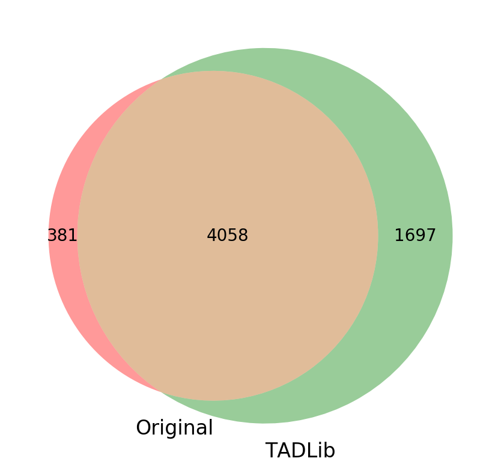

Domain Caller¶
Domaincaller is an implementation of the original DI based TAD caller proposed by
Dixon et al (2012). It provides a single command-line tool called domaincaller
which takes a .cool file as input, calculates the DI track and performs Hidden
Markov Model (HMM) to predict TAD boundary locations. Different from our HiTAD method,
which calculates adaptive DIs with dynamic window sizes, domaincaller uses a fixed
window size specified by the argument --window in DI calculation.
Tutorial¶
Data Preparation¶
The only required input to this tool is the Hi-C matrix in cool format.
Depending on what data you already have, there are different tools you can choose to generate cool:
- If you are starting from the beginning (FASTQ/SRA), I recommend using runHiC, a user-friendly and efficient Hi-C data processing tool developed by our lab.
- If you are an old user of TADLib and have NPZ/TXT Hi-C matrix at hand, you can use the toCooler script distributed with another software of mine hicpeaks.
- In other case, try cooler official tools.
Usage¶
To run domaincaller, just follow the pseudo command below:
$ domaincaller --uri /path/to/the/cool/URI -O test.txt --window 2000000 --removeCache
Type domaincaller or domaincaller -h on your terminal to print detailed help information for each parameter.
Performance test¶
To test the performance of domaincaller, I downloaded Human ES dataset and the TAD calls identified by the original implementation (coded in perl & matlab). After transforming the TXT Hi-C matrix into cool format with my toCooler script, I ran the following command:
$ domaincaller --uri hES-hg18-Ren.cool::40000 -O hESC-test.txt --window 2000000 -M 160000 --removeCache
The execution finished in 4min:14sec (used only one cpu core, 2.6 GHz Intel Core i7). And the venn diagram below shows domaincaller identifies similar TAD boundary locations to the original implementation:
Then I computed the average ChIP-Seq CTCF peak occupancy for boundaries identified by both implementations as well as their neighborhood regions. As shown in the figure below, both boundary sets show same level of CTCF enrichment, although domaincaller detects slightly more boundaries: